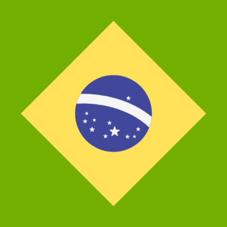
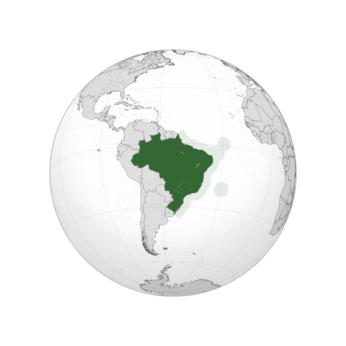
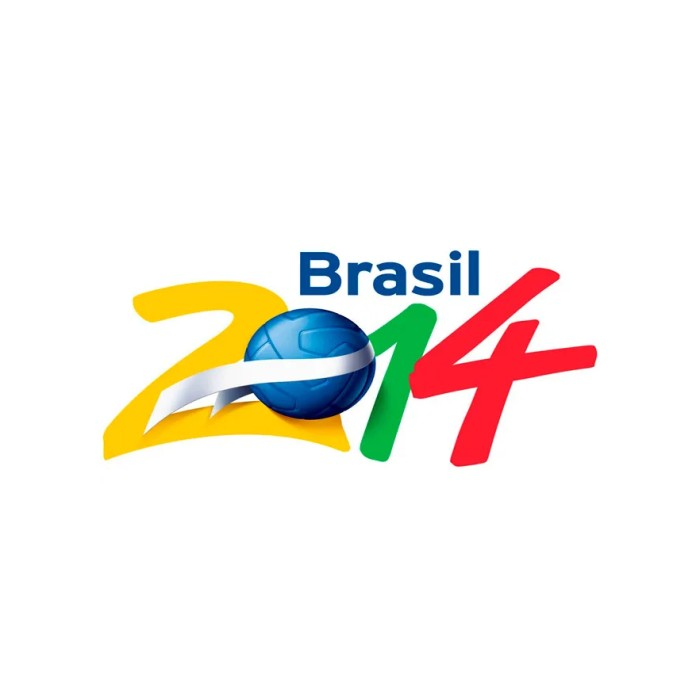

2014 Host
Brazil from 12 June to 13 July 2014, after the country was awarded the hosting rights on 31 July 2007.

Brazil Flag
Brazil was the only official candidate after Colombia withdrew its bid on 11 April 2007. The Brazilian bid was officially launched on 13 December 2006 by Ricardo Teixeira, then president of the Brazilian Football Confederation, who signed the letter of candidacy in Tokyo in the presence of CONMEBOL president Nicolas Leoz and CONMEBOL general secretary Eduardo De Luca.

Brazil Location
FIFA president Sepp Blatter stated on 4 July 2006 that the 2014 World Cup would probably be held in the country, though he acknowledged in earlier comments that the country did not have any stadiums ready for the Cup at the time. On 28 September, he met with the Brazilian President Lula, and was quoted as saying he wanted the country to prove its capabilities before making a decision. "But the ball is on Brazil's court now," he said. In September 2006, Brazil President Luiz Inácio Lula da Silva confirmed Blatter's opinion, declaring: "We don't have any stadium which is in a condition to host World Cup games. We’re going to have to build at least 12 new stadiums in this country."

Bid Logo
On 31 July 2007, Brazil's bid became official, when the Brazilian Football Confederation president, Ricardo Teixeira, delivered personally to FIFA president, Sepp Blatter, a document containing Brazil's hosting stadiums and other required information concerning plans in improvements for general infrastructure and about finances.